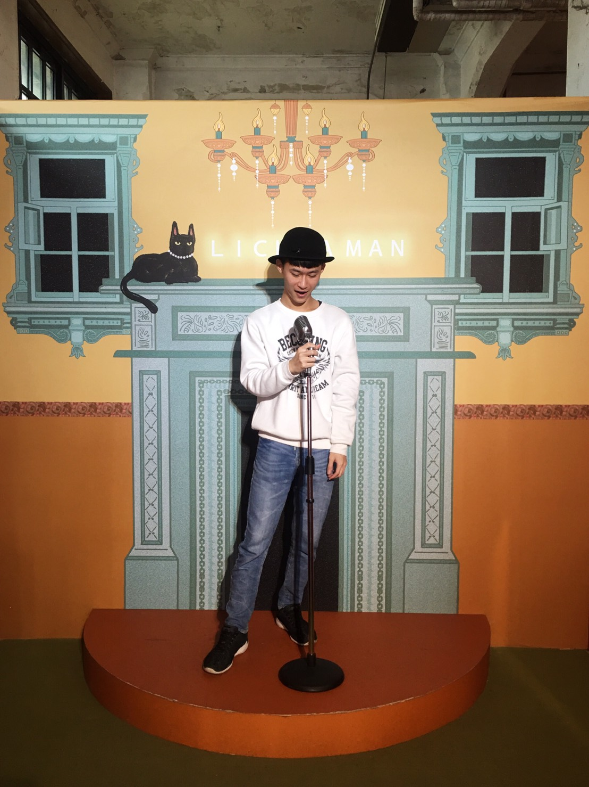
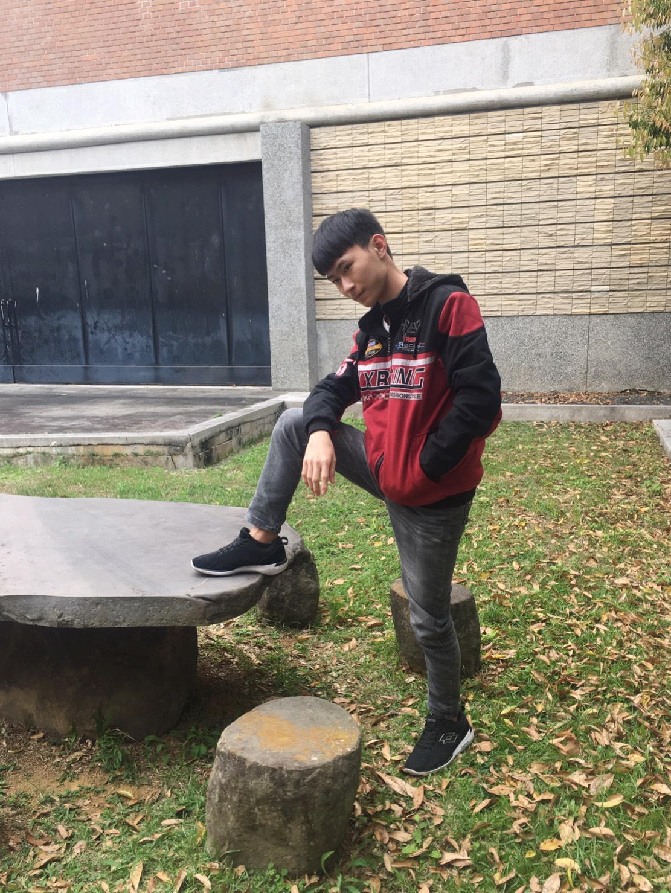

大一時我選擇加入熱舞社,一方面能在這充滿讀書生活裡增加運動量,另一方面能減少自己生活上的壓力,每一次社團時間都能與夥伴盡情地揮灑汗水跳舞,尤其是在成果發表前幾週,大家一起抽空練舞想把表演做好的心情,到最後整個活動終於完美落幕,那些感動與回憶也增添我不少大學生活色彩。
在大學期間我為了減輕一些家裡負擔而跑去飲料店打工,在職場環境會遇到各式各樣的客人,我從一次次與顧客的互動對談中,學習到課堂上很難直接教導的溝通與應變能力,提早進入社會也能看清社會的現實面,進而好好珍惜剩下的大學時光。
最終的我們都是得進入職場工作,與來自各地的人去競爭,但要和那麼多的人競爭,最重要的就是具備武器去對抗,所以我希望在畢業前可以把資訊管理的相關證照考試通過,並且將自己的英文實力提升到一定的階級,不僅僅是為了達到學校的畢業門檻,而是為了自己的未來在鋪路,畢竟英文在這個時代越來越被重視,比別人多一項的優勢,就能夠比別人多一個機會。
希望在中原大學求學的這四年裡,能夠真正的去追自己的夢,以及保持高中時期對於上大學的那份初衷與熱愛,像是雙主修與出國交換留學,好好把握每一次的學習機會,提升自己的知識與經歷,以及多參與不同的課外活動,社團活動、志工服務等等都是可以幫助自己學到在課堂上得不到的東西,培養好自已的人脈及人際關係,將自己最後的學生時期過得更精采、更充實。
|  發光發熱,有個踏上大舞台的夢尚未實現 |
一步一步往上爬,累了就休息一下再啟程 |
|  親近大自然,整個世界都是我的舞台 |
燦爛星球,也會有迷失方向的時刻 |
創意塗鴉,放鬆心情也美化環境 |
以古借鏡,別再犯下相同的錯誤 |
施伯霖
 ggil1399
ggil1399
 1999/07/04
1999/07/04
0961-350-683
 中壢區大仁二街18號
中壢區大仁二街18號
ggil13990@gmail.com